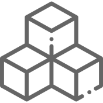

O outro lado da
CRIPTOMOEDA

O que é
Criptomoeda?
Criptomoedas são moedas digitais que utilizam criptografia de ponta no estilo blockchain para garantir o anonimato das transações e protegê-las de possíveis ataques hackers.
TIPOS DE
CRIPTOMOEDAS
Atualmente existem milhares de tipos de criptomoedas em circulação no mercado, cada uma com um diferencial e um propósito distinto. Abaixo estão algumas das principais criptomoedas, juntamente com informações sobre seu volume no mercado, sua taxa de mudança diária e sua capitalização.
BITCOIN
CONVERTA SUAS CRIPTOMEDAS
CARACTERÍSTICAS
VANTAGENS E DESVANTAGENS
Há vantagens e desvantagens no uso das criptomoedas, contudo, para cada fim específico, as características das criptomoedas podem ser consideradas “vantagens” ou “desvantagens”. Por exemplo, para um investigador de crimes online que está a procura de dados sobre determinado caso, a característica anônima das criptomoedas é uma desvantagem. Tendo isso em vista, abaixo estão as principais características das criptomoedas.
BLOCKCHAIN
O blockchain é um mecanismo de banco de dados que permite o compartilhamento de informações de forma segura.
AGILIDADE
Transações com criptomoedas são mais ágeis que as realizadas em bancos devido a utilização da internet como meio.
BAIXO CUSTO
Este ativo tem baixo custo para fazer transferências de dinheiro, sendo que seriam impostas taxas por um suposto intermediário.
PRATICIDADE
É muito mais prático criar uma carteira BTC do que uma conta no banco, já que envolve menos burocracia durante o processo.
VALORIZAÇÃO
A moeda sofreu constantes transformações ao longo do tempo, mas suas funções básicas como intermediária de troca, unidade de conta e reserva de valor, não se alteram. Portanto, quaisquer "objeto" que tem essas características poderia ser utilizado como moeda.
_______ (Lopes, 2005)MOEDAS METÁLICAS
Inicialmente as moedas metálicas surgiram como um instrumento de troca favorável devido seu material resistente, o qual podia ser estocado sem deteriorar. Esses materiais variavam entre ferro, cobre, bronze, ouro e prata. Contudo, foi identificado um problema com a circulação dessas moedas por conta da necessidade de transportar grandes quantias da mesma. Tendo em vista as dificuldades e riscos de transporte, foram criadas instituições responsáveis por armazenar essas moedas, cujas forneciam um certificado que atuava como comprovante da quantia reservada.
MINERAÇÃO
A mineração de criptomoedas é um processo que coloca as moedas digitais em circulação. ela compreende desde o registro, validação até a inserção da mesma no blockchain, etapas inclusas em um processo extenso.
VOCÊ SABE COMO AS CRIPTOMOEDAS SÃO
MINERADAS?
BLOCKCHAIN
A blockchain é uma tecnologia relativamente recente que está sendo adotada de forma inovadora por vários setores, dentre eles, a bolsa de valores, as impresas de energia e o varejo.
BOLSA DE VALORES
Usam os serviços de blockchain para gerenciar pagamentos, contas e o mercado comercial online.
EMPRESAS DE ENERGIA
Criam plataformas de comercialização de energia entre pares e facilitam o acesso a energias renováveis.
VAREJO
Usam a blockchain para monitorar a movimentação de mercadorias entre fornecedores e compradores.
RECURSOS
A escolha por essa tecnologia se dá devido aos recursos que a mesma fornece. Estes recursos estão listados a seguir:
IMUTABILIDADE
As transações são fixas, depois que registradas no livro-razão não podem ser alteradas senão com a adição de outra transação.
descentralização
A descentralização se deve ao fato de que as transações nesse sistema não possuem um intermediário.
CONSENSO
O registro das transações, no livro-razão, só poderá ser feito quando a maioria dos participantes da rede der seu consentimento.
LIVRO - RAZÃO
Registra todas as transações, sendo que todos os participantes da rede têm acesso a ele e ao registro imutável das transações.
COMO FUNCIONA
1º
Cada transação é registrada como um “bloco” de dados.
2º
Cada bloco é conectado a um bloco anterior e a outro posterior
3º
As transações são incluídas, numa cadeia irreversível: uma blockchain
REGULAMENTAÇÃO

LEGALIDADE GLOBAL
A regulamentação das criptomoedas tem sido um tópico de debate em todo o mundo. Alguns países adotaram uma abordagem positiva, enquanto outros expressaram preocupações sobre os riscos associados às criptomoedas, como lavagem de dinheiro, evasão fiscal e volatilidade de preços. Legalizar a criptomoeda mundialmente pode trazer trazer benefícios, no entanto, os governos também estão preocupados com os riscos mencionados anteriormente e buscam encontrar um equilíbrio entre promover a inovação e proteger os investidores e a integridade do sistema financeiro.
120
PAÍSES
57
REGIÕES
2453
ESTADOS
Apesar de a criptomoeda ainda não ser regulamentada oficialmente no mundo, alguns países foram em busca da regulamentação dela, criando legislações para a mesma, são eles:

Cada país trata a regulamentação de maneira diferente, isso pode ser notado a seguir com os EUA e o Japão que possuem relações distintas com as criptomoedas.
EUA
Trata as criptomoedas como bens na respectiva legislação, na qual consta todas as transações envolvendo as criptomoedas, porém cada ente federativo terá competência para emitir sua própria legislação, devido ao seu sistema federalista.
JAPÃO
Trouxe uma lei bastante avançada, a qual reconhece as criptomoedas como moeda. Após o japão adotar uma nova legislação, o mesmo consta com a proteção de seus usuários a fim de impedir a lavagem de dinheiro, caracterizada como delito.
DE 257 PAÍSES:
Em 51% de 257 países, a criptomoeda é legalizada.
Em 3% de 257 países, a criptomoeda é restrita.
Em 3% de 257 países, a criptomoeda não é legalizada.